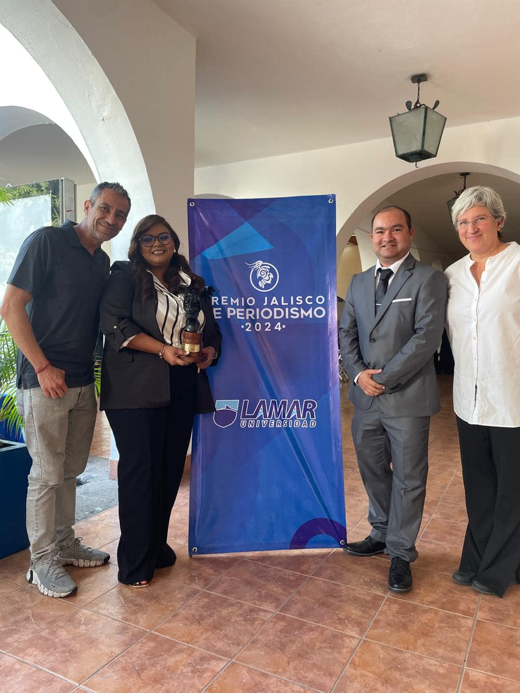

Currículo
Formación
- Licenciatura en Periodismo en el Centro Universitario del Sur de la Universidad de Guadalajara (Egresado)
2013-2017
- Clase ONE Education Alura y Oracle G8, especialidad en análisis de datos (En proceso)
2025
- Certificación en análisis de datos por Google (En proceso)
2024-2025
- Taller de periodismo narrativo por Quinto Elemento Lab
2023-2024
- Máster en Web Scraping con Python Udemy
2023
- Diplomado en Periodismo de Investigación y en Estudios, Violencias y Perspectiva de Género
por la Universidad Autónoma Metropolitana
2023
Experiencia
- Reportero en Radio Universidad de Guadalajara en Ciudad Guzmán 2015-2017
- Coordinador editorial de El Suspicaz 2017-actualidad
- Reportero en NTR Guadalajara 2020-actualidad
- Reportero y webmáster en Letra Fría 2023-actualidad
- Becario CONNECTAS para reportajes de investigación 2022 y 2024
- Integrante de CONNECTASHub 2022-actualidad
Logros
Trabajos destacados
Habilidades
- Manejo de WordPress para creación y gestión de sitios web
- Análisis de datos con Python, R y Libre Office Calc
- Manejo básico de QGis
- Conocimientos básicos de HTML5, CSS3 y JavaScript
